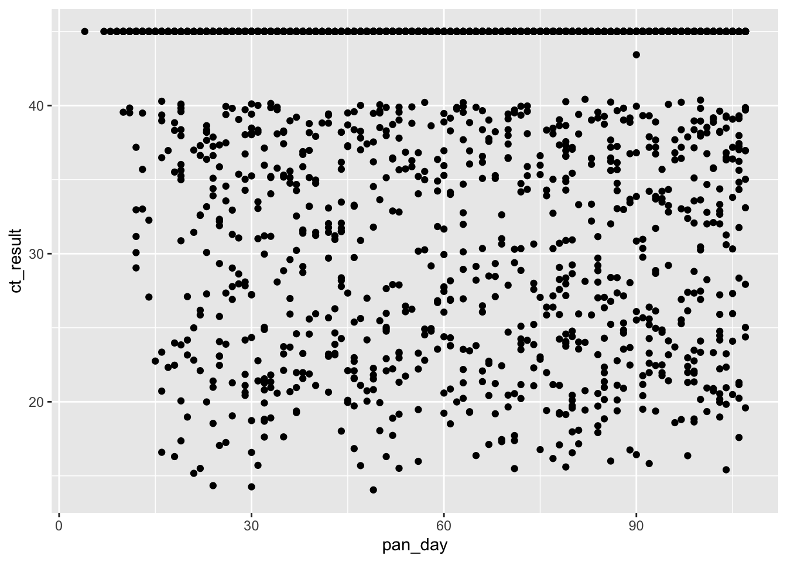

Introduction to Rmarkdown
11/18/2021
0.1 R Markdown
Rmarkdown is an authoring framework for creating a variety of data-driven documents reproducibly with R. This e-book is itself a set of R Markdown documents, assembled with the {bookdown} package. RMarkdown is a simple formatting syntax that allows you to mix text and code to document data analysis, and author MS Word, MS Powerpoint, HTML, PDF, web dashboards, web apps, and poster documents. Rmarkdown documents are fully reproducible and support dozens of output formats. If your data changes, or you decide to change a part of your analysis, you can reproduce the entire (new version) of the document with a single click of the Knit button.
When you click the Knit button a document will be generated that includes both text content as well as the output of any embedded R code chunks within the document. You can embed an R code chunk like this (which will run and produce output below. In this case, showing the contents of the covid_testing dataset.):
covid <- medicaldata::covid_testing
glimpse(covid)## Rows: 15,524
## Columns: 17
## $ subject_id <dbl> 1412, 533, 9134…
## $ fake_first_name <chr> "jhezane", "pen…
## $ fake_last_name <chr> "westerling", "…
## $ gender <chr> "female", "fema…
## $ pan_day <dbl> 4, 7, 7, 8, 8, …
## $ test_id <chr> "covid", "covid…
## $ clinic_name <chr> "inpatient ward…
## $ result <chr> "negative", "ne…
## $ demo_group <chr> "patient", "pat…
## $ age <dbl> 0.0, 0.0, 0.8, …
## $ drive_thru_ind <dbl> 0, 1, 1, 1, 0, …
## $ ct_result <dbl> 45, 45, 45, 45,…
## $ orderset <dbl> 0, 0, 1, 1, 1, …
## $ payor_group <chr> "government", "…
## $ patient_class <chr> "inpatient", "n…
## $ col_rec_tat <dbl> 1.4, 2.3, 7.3, …
## $ rec_ver_tat <dbl> 5.2, 5.8, 4.7, …The Knit button runs
render("file.Rmd", output = document-type)
for you
0.2 Including Plots
You can also embed plots, for example:

Note that the echo = FALSE parameter was added to the top of the plot code chunk to prevent printing of the R code that generated the plot.
0.3 Other languages in code chunks
You can use a number of different open-source languages in addition to R if needed to do your data analysis, including SQL, shell code with Unix Bash, C, C++ via Rcpp, Stan, and D3.
0.4 What Makes an Rmarkdown document?
An Rmarkdown document is a plain-text file with the *.Rmd file extension. It is composed of three types of content:
- The YAML header (at the top), surrounded at top and bottom by 3 dashes (—)
- Text narrative
- Code chunks, surrounded at top and bottom by 3 backticks (```), and a code language identifier in braces, like {r}
- Note that the first code chunk is always named
setupand is used to load libraries and set up document options.
- Note that the first code chunk is always named
This essentially provides an interface like a ‘lab notebook’ for data analysis. You can use code chunks to run the analysis, and text to document what you are doing in the analysis, how it worked, and interpret the results.
Code outputs, including tables and plots, are incorporated into the document.
You can choose to show or hide the code chunks in the final document with chunk options, like:
{r, echo = FALSE} - runs code, but does not show it.
or
{r, echo = TRUE} - runs code and shows the code.
0.5 How It Works

rmarkdown processing
Rmarkdown is an R-flavored version of the markdown language. This is a universal, open-source language for creating documents. Markdown documents end with the file extension *.md. An open-source program named pandoc converts *.md documents to output documents like MS Word, PDF, HTML, MS Powerpoint, etc.
When you click the Knit button or run the render() function, R Markdown feeds the .Rmd file to knitr, which executes all of the code chunks and creates a new markdown (.md) document which includes the code and its output.
The markdown file generated by {knitr} is then processed by pandoc which is responsible for creating the finished format.
This may sound complicated, but R Markdown makes it extremely simple by encapsulating all of the above processing into a single render() function (or the Knitr button).